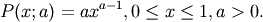
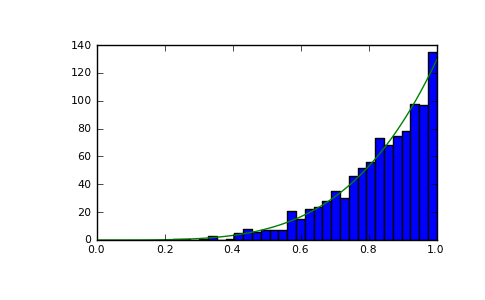

numpy.random.mtrand.RandomState.power¶
- RandomState.power(a, size=None)¶
Draws samples in [0, 1] from a power distribution with positive exponent a - 1.
Also known as the power function distribution.
Parameters : a : float
parameter, > 0
size : tuple of ints
- Output shape. If the given shape is, e.g., (m, n, k), then
m * n * k samples are drawn.
Returns : samples : {ndarray, scalar}
The returned samples lie in [0, 1].
Raises : ValueError :
If a<1.
Notes
The probability density function is

The power function distribution is just the inverse of the Pareto distribution. It may also be seen as a special case of the Beta distribution.
It is used, for example, in modeling the over-reporting of insurance claims.
References
[R188] Christian Kleiber, Samuel Kotz, “Statistical size distributions in economics and actuarial sciences”, Wiley, 2003. [R189] Heckert, N. A. and Filliben, James J. (2003). NIST Handbook 148: Dataplot Reference Manual, Volume 2: Let Subcommands and Library Functions”, National Institute of Standards and Technology Handbook Series, June 2003. http://www.itl.nist.gov/div898/software/dataplot/refman2/auxillar/powpdf.pdf Examples
Draw samples from the distribution:
>>> a = 5. # shape >>> samples = 1000 >>> s = np.random.power(a, samples)
Display the histogram of the samples, along with the probability density function:
>>> import matplotlib.pyplot as plt >>> count, bins, ignored = plt.hist(s, bins=30) >>> x = np.linspace(0, 1, 100) >>> y = a*x**(a-1.) >>> normed_y = samples*np.diff(bins)[0]*y >>> plt.plot(x, normed_y) >>> plt.show()
(Source code, png, pdf)
Compare the power function distribution to the inverse of the Pareto.
>>> from scipy import stats >>> rvs = np.random.power(5, 1000000) >>> rvsp = np.random.pareto(5, 1000000) >>> xx = np.linspace(0,1,100) >>> powpdf = stats.powerlaw.pdf(xx,5)
>>> plt.figure() >>> plt.hist(rvs, bins=50, normed=True) >>> plt.plot(xx,powpdf,'r-') >>> plt.title('np.random.power(5)')
>>> plt.figure() >>> plt.hist(1./(1.+rvsp), bins=50, normed=True) >>> plt.plot(xx,powpdf,'r-') >>> plt.title('inverse of 1 + np.random.pareto(5)')
>>> plt.figure() >>> plt.hist(1./(1.+rvsp), bins=50, normed=True) >>> plt.plot(xx,powpdf,'r-') >>> plt.title('inverse of stats.pareto(5)')
{kind=link}
{kind=link}
{kind=link}
{kind=link}

Previous topic
numpy.random.mtrand.RandomState.poisson
Next topic
numpy.random.mtrand.RandomState.rand